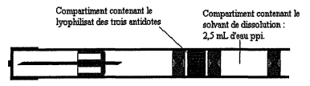
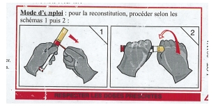
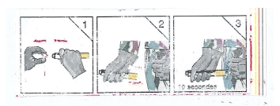

RÉSUMÉ DES CARACTÉRISTIQUES DU PRODUIT
ANSM - Mis à jour le : 19/03/2010
INEUROPE, poudre et solvant pour solution injectable
2. COMPOSITION QUALITATIVE ET QUANTITATIVE
Le compartiment de poudre de la cartouche contient:
Sulfate d'atropine ................................................................................................................................. 2 mg
Chlorhydrate d'avizafone ..................................................................................................................... 20 mg
Méthylsulfate de pralidoxime ............................................................................................................. 350 mg
A reconstituer dans 2,5 ml d'eau pour préparations injectables contenue dans le compartiment de solvant de la cartouche.
Pour la liste complète des excipients, voir rubrique 6.1.
Poudre et solvant pour solution injectable.
Poudre blanche à légèrement jaune.
Solvant limpide et incolore.
4.1. Indications thérapeutiques
Traitement d'urgence, sur le terrain, des intoxications par les agents neurotoxiques organophosphorés tels que SARIN, SOMAN, TABUN et VX.
4.2. Posologie et mode d'administration
Ce médicament doit être utilisé sur ordre des autorités compétentes.
La reconstitution de la solution injectable est réalisée sur ordre des autorités.
Le traitement débute dès l'apparition des premiers symptômes d'intoxication.
Posologie
Réservé à l'adulte à partir de 18 ans.
Auto-injection par voie intramusculaire dans la cuisse, dès l'apparition des premiers symptômes d'intoxication, de la dose contenue dans un dispositif.
En cas de persistance des symptômes d'intoxication, l'injection peut être renouvelée une fois UNIQUEMENT, 15 minutes après la première injection.
La posologie à utiliser chez le sujet âgé ou en cas d'insuffisance rénale ou hépatique n'est pas connue.
Mode d'administration
Description du dispositif
L'autoinjecteur est un dispositif contenant dans un compartiment les 3 principes actifs sous forme lyophilisée et dans un autre compartiment le solvant (eau pour préparations injectables; eau ppi).
Le schéma suivant décrit l'auto-injecteur.

Mode de reconstitution de la solution et injection
Le dispositif permet la reconstitution de la solution et son injection, en 2 temps successifs.
· Premier temps: reconstitution de la solution à injecter.
Elle se fera sur ordre des autorités et/ou dès la notion de menace avérée d'intoxication, par vissage du système, après retrait de la sécurité de reconstitution, selon le schéma ci-joint:

· Deuxième temps: injection intramusculaire après retrait de la sécurité d'injection, par pression sur le corps inférieur de l'auto-injecteur mis en contact de la face externe de la cuisse, à travers les vêtements, selon le schéma ci-dessous:

Note: en cas de risque avéré d'intoxication, sur ordre des autorités, un pré-traitement par pyridostigmine sera démarré par voie orale à raison de 30 mg toutes les 8 heures.
Il n'y a pas de contre-indication lorsque les indications sont respectées.
4.4. Mises en garde spéciales et précautions d'emploi
Mises en garde spéciales
Ce médicament peut provoquer:
· une somnolence, une amnésie et des réactions paradoxales (liées à l'avizafone (benzodiazépine)),
· des troubles de la vision (liés au pralidoxime ou à l'atropine),
· des réactions d'hypersensibilité à l'un des trois constituants.
La prise d'alcool ou de médicaments contenant de l'alcool est déconseillée (voir rubrique 4.5).
Précautions d'emploi
Des précautions d'emploi doivent être prises dans les cas suivants:
Liées à l'avizafone:
· chez le sujet âgé;
· chez l'insuffisant rénal ou hépatique;
· chez le sujet présentant des apnées du sommeil.
Liées à l'atropine:
· antécédents de glaucome par fermeture de l'angle;
· rétention urinaire liée à des troubles urétro-prostatique, hypertrophie de la prostate;
· hyperthyroïdie;
· insuffisance respiratoire, rénale et/ou hépatique;
· bronchite chronique;
· iléus paralytique, atonie intestinale, mégacôlon toxique.
Liées à la pralidoxime:
· chez l'insuffisant rénal et hépatique.
Néanmoins, dans le contexte d'urgence, seules les précautions d'emploi suivantes sont à respecter:
Liées à l'avizafone: myasthénie.
Liées à l'atropine: insuffisance coronarienne, troubles du rythme ventriculaires connus: surveiller la fréquence cardiaque au décours des injections.
4.5. Interactions avec d'autres médicaments et autres formes d'interactions
Médicaments sédatifs
Il faut prendre en compte le fait que de nombreux médicaments ou substances peuvent additionner leurs effets dépresseurs du système nerveux central et contribuer à diminuer la vigilance. Il s'agit des dérivés morphiniques (analgésiques, antitussifs et traitements de substitution), des neuroleptiques, des barbituriques, des benzodiazépines, des anxiolytiques autres que les benzodiazépines (par exemple, le méprobamate), des hypnotiques, des antidépresseurs sédatifs (amitriptyline, doxépine, miansérine, mirtazapine, trimipramine), des antihistaminiques H1 sédatifs, des antihypertenseurs centraux, du baclofène et du thalidomide.
+ Alcool
Majoration par l'alcool de l'effet sédatif de ces substances. L'altération de la vigilance peut rendre dangereuses la conduite de véhicules et l'utilisation de machines. Eviter la prise de boissons alcoolisées et de médicaments contenant de l'alcool.
Associations faisant l'objet de précautions d’emploi
+ Cimétidine
Avec la cimétidine utilisée à des doses supérieures ou égales à 800 mg/j: risque accru de somnolence. Avertir les patients de l'augmentation du risque en cas de conduite automobile ou d'utilisation de machines.
+ Phénytoïne (et par extrapolation fosphénytoïne)
Variations imprévisibles: les concentrations plasmatiques de phénytoïne peuvent augmenter, avec signes de surdosage, mais aussi diminuer ou rester stables. Surveillance clinique et contrôle des concentrations plasmatiques de phénytoïne.
+ Stiripentol
Augmentation des concentrations plasmatiques du diazépam, avec risque de surdosage, par inhibition de son métabolisme hépatique. Surveillance clinique et dosage plasmatique, lorsque cela est possible, du diazépam associé au stiripentol.
Associations à prendre en compte
+ Barbituriques
Risque majoré de dépression respiratoire, pouvant être fatale en cas de surdosage.
+ Buprénorphine
Avec la buprénorphine utilisée en traitement de substitution: risque majoré de dépression respiratoire, pouvant être fatale. Evaluer attentivement le rapport bénéfice/risque de cette association. Informer le patient de la nécessité de respecter les doses prescrites.
+ Buspirone
Risque de majoration des effets indésirables de la buspirone.
+ Cisapride
Majoration transitoire de l'effet sédatif du diazépam par augmentation de sa vitesse d'absorption. L'altération de la vigilance peut rendre dangereuses la conduite de véhicules et l'utilisation de machines.
+ Clozapine
Risque accru de collapsus avec arrêt respiratoire et/ou cardiaque.
+ Morphiniques
Risque majoré de dépression respiratoire, pouvant être fatale en cas de surdosage.
Liés à l'atropine
Médicaments atropiniques
Il convient de prendre en compte le risque lié à l'association d'un médicament à action atropinique (imipraminiques, neuroleptiques phénothiaziniques, antispasmodiques, certains antihistaminiques H1…) chez un patient traité par anticholinestérasique. Outre la possible diminution de l'effet thérapeutique de ce dernier, l'interruption brutale du traitement atropinique expose au risque de dévoiler alors les effets muscariniques du parasympathomimétique avec symptomatologie de type «crise cholinergique», pouvant se manifester notamment par des convulsions.
En raison de la mise en jeu du pronostic vital, l'utilisation d'INEUROPE est possible au cours de la grossesse quel qu'en soit le terme.
En raison de la mise en jeu du pronostic vital, l'utilisation d'INEUROPE est possible au cours de l'allaitement.
4.7. Effets sur l'aptitude à conduire des véhicules et à utiliser des machines
Les conducteurs de véhicules automobiles et les utilisateurs de machines doivent être prévenus des risques possibles de somnolence et de troubles de l'accommodation.
L'association avec d'autres médicaments sédatifs doit être déconseillée.
Liés à l'avizafone:
· Sensation ébrieuse, ataxie;
· Asthénie, baisse de la vigilance, somnolence;
· Amnésie antérograde, troubles mnésiques;
· Réactions paradoxales (insomnie, cauchemars, irritabilité, agressivité, agitation, troubles du comportement, troubles de la conscience);
· Hypotonie musculaire;
· Eruptions cutanées, parfois prurigineuses;
· Très rares cas d'augmentation des transaminases et des phosphatases alcalines ainsi que des cas d'ictères.
Liés à l'atropine:
· Sécheresse buccale;
· Diminution de la sécrétion lacrymale;
· Epaississement des sécrétions bronchiques;
· Tachycardie, palpitations;
· Constipation;
· Rétention d'urine;
· Troubles de l'accommodation;
· Excitabilité;
· Irritabilité, confusion mentale chez les personnes âgées.
Liés à la pralidoxime:
· Troubles visuels: diplopie, vision floue;
· Malaises, vertiges, céphalées et tachycardie.
Liés à la voie d'administration: possibilité de douleur transitoire au point d'injection.
Le surdosage volontaire ou accidentel est rare, puisque chaque sujet n'aura à sa disposition que 2 dispositifs.
En cas d'hypersensibilité à l'un des composants, le traitement sera symptomatique, en particulier sur le plan respiratoire et cardiovasculaire.
Symptômes et traitements en cas de surdosage lié à:
· l'avizafone: sommeil profond jusqu'au coma, signes de confusion mentale, léthargie, ataxie, hypotonie, hypotension, dépression respiratoire (le flumazénil est l'antidote),
· l'atropine: sécheresse buccale, mydriase, paralysie de l'accommodation, diminution des sécrétions et surtout tachycardie, agitation, confusion et hallucinations allant jusqu'au délire, dépression respiratoire.
· la pralidoxime: la pralidoxime à doses très élevées pourrait aggraver le bloc neuromusculaire dû à l'organophosphoré.
5. PROPRIETES PHARMACOLOGIQUES
5.1. Propriétés pharmacodynamiques
Classe pharmacothérapeutique: tous autres médicaments (antidote)
Code ATC: V03AB
L'INEUROPE est un antidote associant trois principes actifs: l'atropine, l'avizafone et la pralidoxime. Il exerce un effet antidote par effet cumulé de l'activité des trois principes actifs associé dans le médicament:
· l'atropine, anticholinergique, actif sur les récepteurs muscariniques;
· l'avizafone, prodrogue active sous forme de diazépam, anticonvulsivant;
· la pralidoxime, réactivateur des cholinestérases (enzymes régulatrices de la transmission nerveuse) inhibées par les neurotoxiques.
5.2. Propriétés pharmacocinétiques
Absorption
Atropine: après administration intramusculaire, les concentrations plasmatiques maximales sont atteintes en 6 minutes en moyenne.
Diazépam: après administration intramusculaire d'avizafone (prodrogue), les concentrations plasmatiques de diazépam sont atteintes entre 30 et 60 minutes.
Pralidoxime: après administration intramusculaire, les concentrations plasmatiques maximales sont atteintes en 25 à 60 minutes.
Distribution
Atropine: distribution tissulaire rapide; passage de la barrière hémato-encéphalique; liaison aux protéines plasmatiques: 44%; passage de la barrière placentaire et dans le lait maternel.
Diazépam: volume de distribution de 1 à 2 l/Kg; liaison aux protéines plasmatiques: 95 à 98%.
Passage de la barrière hémato encéphalique ainsi que dans le plasma et le lait maternel.
Pralidoxime: large diffusion dans le compartiment extracellulaire; faible passage de la barrière hémato-encéphalique; non liée aux protéines plasmatiques.
Métabolisme et élimination
Atropine: métabolisme hépatique; élimination urinaire sous forme inchangée (un tiers) et sous forme de métabolites glucuroconjugués pour le reste; demi-vie d'élimination plasmatique: 2 à 2 heures 30.
Diazépam: métabolisme hépatique; excrétion urinaire avec pourcentage négligeable (< 0,1 %) de produit inchangé; demi-vie d'élimination plasmatique: 32 à 47 heures; les deux métabolites principaux sont le desméthyldiazépam (demi-vie de 30 à 150 heures) et l'oxazépam tous les deux actifs; ces métabolites sont éliminés dans les urines sous une forme inactive glucuroconjuguée. Après administration d'avizafone, seuls les métabolites connus du diazépam sont identifiés.
Pralidoxime: métabolisme hépatique; élimination urinaire rapide en quelques heures sous forme inchangée et de métabolites; demi-vie d'élimination plasmatique de 1 à 3 heures.
5.3. Données de sécurité préclinique
Les résultats des études de sécurité précliniques, conduites avec l'association des trois principes actifs (ou avec INEUROPE) sur plusieurs espèces animales, à des doses correspondant à 10 fois la dose thérapeutique maximale, ont révélé des effets en relation avec une exacerbation de l'activité pharmacodynamique de chacun des constituants. Aucune toxicité particulière n'a été mise en évidence avec l'association, par rapport aux données disponibles avec chacun des constituants.
Solvant: eau pour préparations injectables.
En l'absence d'études de compatibilité, ce médicament ne doit pas être mélangé avec d'autres médicaments.
Pour la cartouche: 3 ans à partir de la fabrication du lyophilisat.
Pour la cartouche conditionnée dans le dispositif médical: 4 ans à partir de la fabrication du lyophilisat.
Après reconstitution: à conserver maximum 6 mois.
6.4. Précautions particulières de conservation
A conserver à une température comprise entre +2 et +8°C.
6.5. Nature et contenu de l'emballage extérieur
Poudre et solvant pour solution injectable en cartouche (Polypropylène), la cartouche est conditionnée dans un sachet; boîte de 1.
Poudre et solvant pour solution injectable en cartouche contenue dans un dispositif médical. Le dispositif est conditionné dans un sachet; boîte de 1.
6.6. Précautions particulières d’élimination et de manipulation
A reconstituer sur ordre des autorités et/ou dès la notion de menace avérée d'intoxication.
A utiliser dès apparition des premiers symptômes d'intoxication.
Tout produit non utilisé ou déchet doit être éliminé conformément à la réglementation en vigueur.
7. TITULAIRE DE L’AUTORISATION DE MISE SUR LE MARCHE
PHARMACIE CENTRALE DES ARMEES
TSA 30004
45404 FLEURY LES AUBRAIS Cedex
8. NUMERO(S) D’AUTORISATION DE MISE SUR LE MARCHE
· 384 167-4 ou 34009 384 167 4 9: poudre et solvant en cartouche (Polypropylène); boîte de 1.
· 384 168-0 ou 34009 384 168 0 0: poudre et solvant en cartouche (Polypropylène) contenue dans un dispositif médical; boîte de 1.
9. DATE DE PREMIERE AUTORISATION/DE RENOUVELLEMENT DE L’AUTORISATION
[à compléter par le titulaire]
10. DATE DE MISE A JOUR DU TEXTE
[à compléter par le titulaire]
Sans objet.
12. INSTRUCTIONS POUR LA PREPARATION DES RADIOPHARMACEUTIQUES
Sans objet.
Liste I.